15. IoT Case 06: Weather Station¶
Level: 

15.1. Goal¶
Make a weather station which gets the values from the raindrop sensor, temperature and humidity sensor. The data will be sent to IoT platform - ThingSpeak.
15.2. Background¶
What is Thingspeak?
ThingSpeak is an IoT analytics platform service which provides instant visualizations of data posted by your devices to ThingSpeak. In this case, we will use this platform to update our data to plot instant graphs.
Weather station operation
Collecting temperature, humidity and raindrop consistently and uploading the data by using Thingspeak. This can help us to do analytical work more conveniently as we can refer to the automatically plotted graphs.
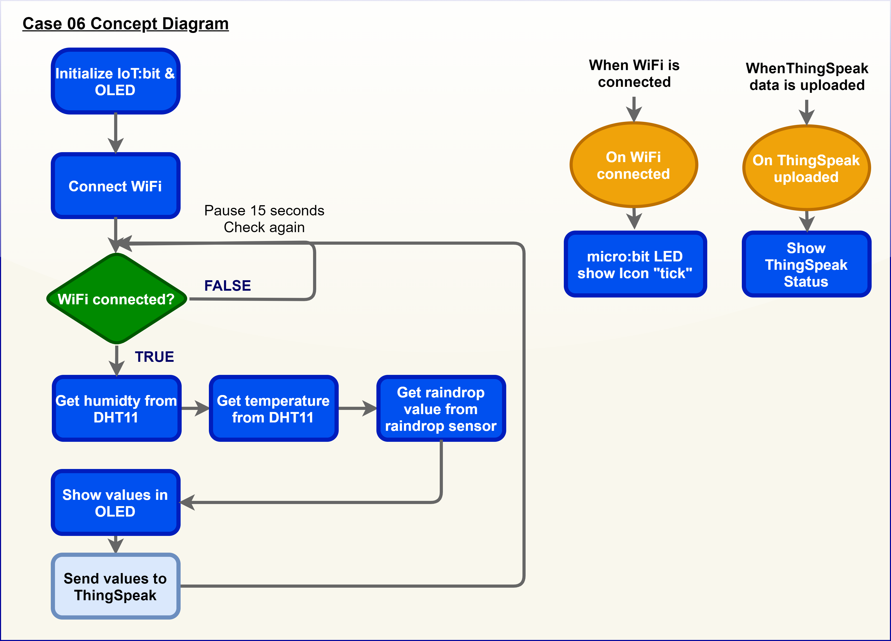

15.4. Assembly step¶
Step 1
Attach the raindrop sensor to F2 model.
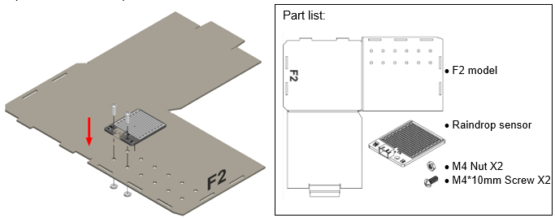
Step 2
Attach the temperature and humidity sensor to F2 model. 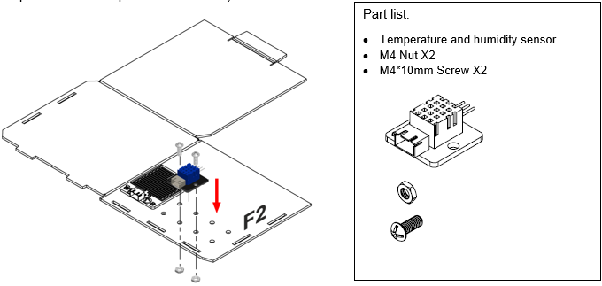
Step 3
Put together all the cardboard parts (F1-F2). 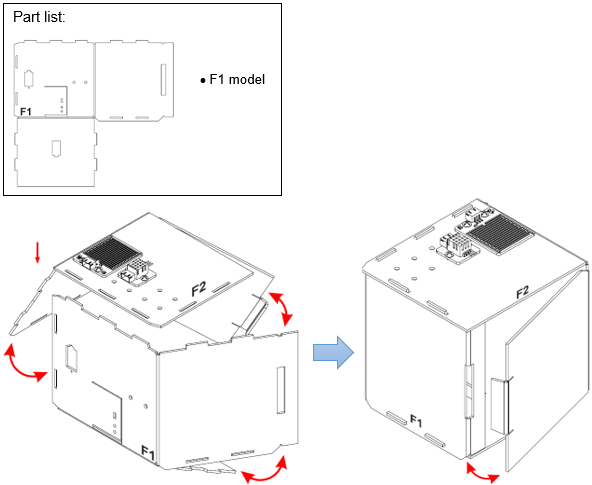
Step 4
Assembly completed!

15.5. Hardware connect¶
Connect the Raindrop Sensor to P0 port of IoT:bit
Connect the Temperature and humidity Sensor to P2 port of IoT:bit
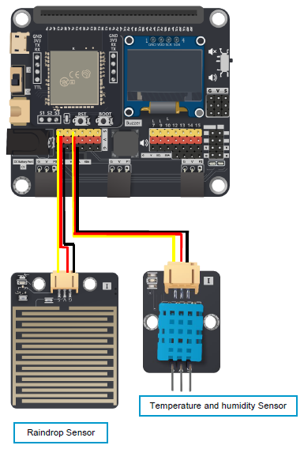
15.6. IoT (ThingSpeak)¶
For more details, please refer to Chapter 1: Upload Data to ThingSpeak Step 1
Go to https://thingspeak.com, Choose Channels -> My Channels -> New Channel
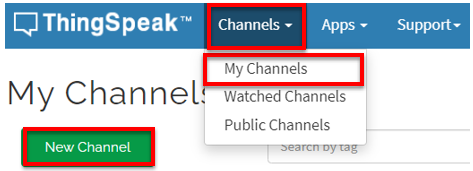
Step 2
Input Channel name, Field1 and Field2 , then click “Save Channel”
Channel name: Smart Weather Station
Field 1: temperature
Field 2: humidity
Freld 3: raindrop
Step 3
Select your channel > “API Keys” ，copy the API key as follows:

15.7. Programming (MakeCode)¶
Step 1
Initialize OLED and IoT:bit and connect to WiFi.
Snap
Initialize OLED with width:128, height: 64toon startSnap
Initialize IoT:bit TX P16 RX P8fromIoT:bittoon startSnap
Set Wi-Fi to ssid pwdfromIoT:bitEnter your Wi-Fi name and password. Here we set
smarthonasSSIDand12345678aspasswordSet variable
raindrop,humidityandtemperatureto 0 fromvariables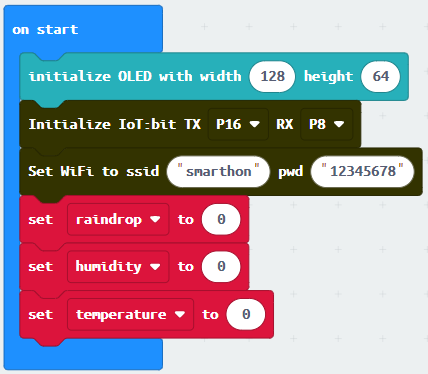
Step 2
Show icon “tick” after WiFi connection.
Snap
show iconfrombasictoOn WiFi connectedand select icontick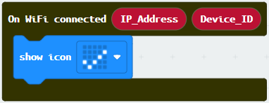
Step 3
Get values from Temperature and Humidity sensor (DHT11) and raindrop sensor.
Snap
if statementto blockforeverIf
WiFi is connectedThen, set
humiditytoread humidity from DHT11 at Pin P2Set
temperaturetoread temperature from DHT11Set
raindroptoget raindrop value (percentage) at Pin P0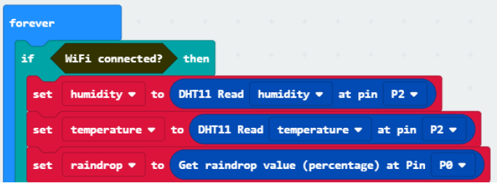
Step 4
Show string Temperature, humidity and raindrop on the OLED by using join from text.
Snap
clear OLED displayfromOLEDto avoid overlapSnap
show stringand show value of variablesTemperature,HumidityandRaindrop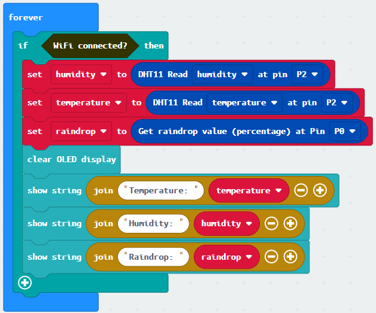
Step 5. Upload data to ThingSpeak
Snap
Send Thingspeak key...inside theif-statementFill in the
api keyfrom Thingspeak with temperature, humidity and raindrop valueSnap
pauseto the loop to wait 15 second 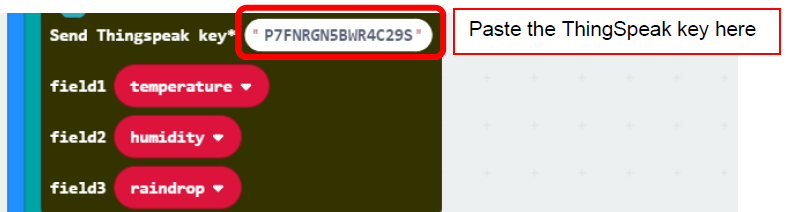
Step 6. Show ThingSpeak upload status
Snap
show stringinsideOn Thingspeak UploadedDraw the variable
StatusandError_codeto blockshow string
Full Solution
MakeCode: https://makecode.microbit.org/_F9q1r4comWfR
You could also download the program from the following website:
15.8. Result¶
When micro:bit is connected to WiFi, it will check weather information (temperature, humidity from Temperature and humidity Sensor and raindrop value from raindrop sensor). Then, those data will be sent to ThingSpeak and pause for 15 seconds for another update.
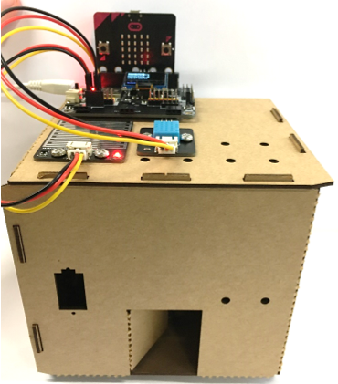
We can find three graphs on Thingspeak including temperature, humidity and raindrop (field1, field2, field3) respectively by collecting data using different sensors.
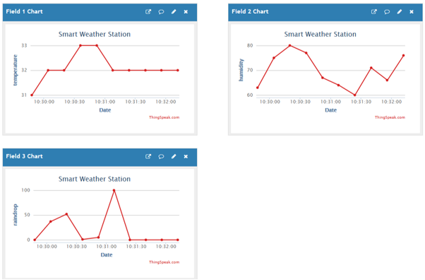